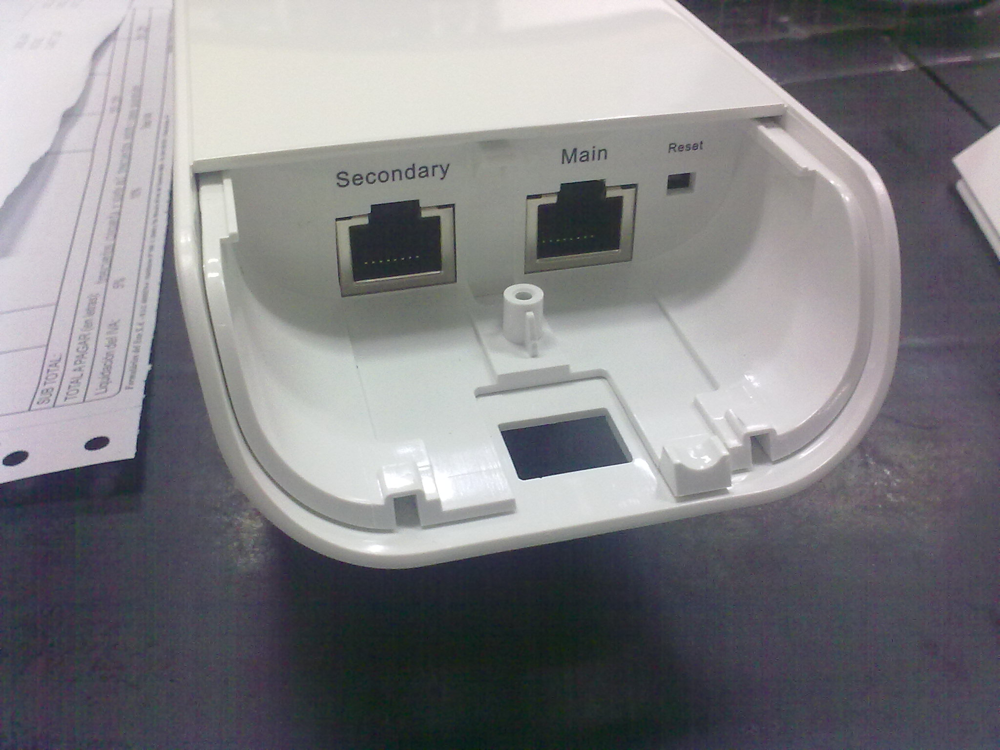
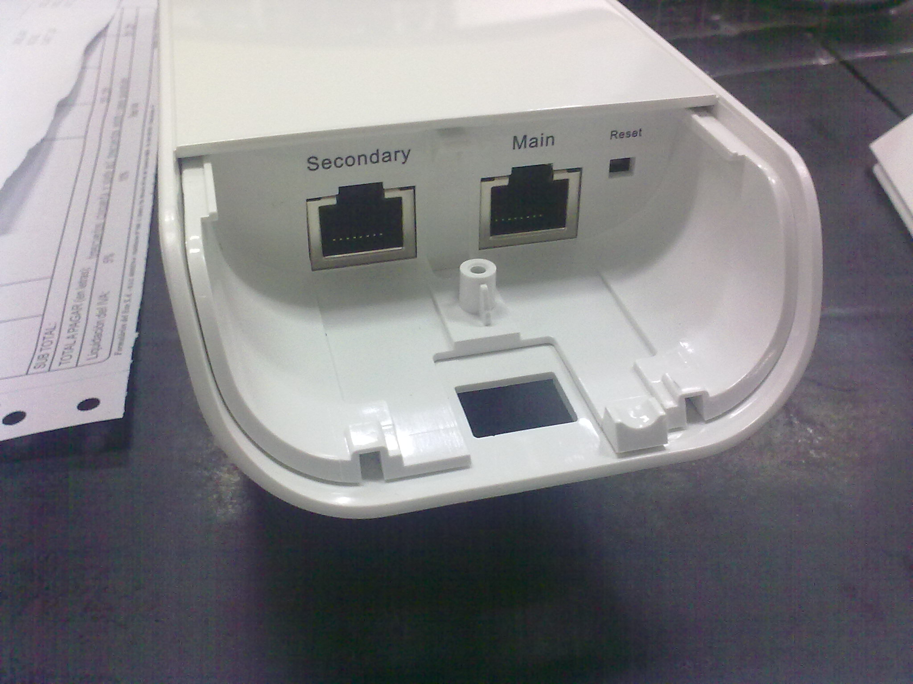

Taller nodos híbridos
Omnitik
Supernodos híbridos (mikrotik/ubiquiti) en guifi.net
Apreta la tecla → para avanzar.

Guifi.net es una red de telecomunicaciones libre, abierta y neutral, mayoritariamente inalámbrica, con más de 30.000 nodos, de los cuales más de 20.000 están operativos.
Licencia procomún de la Red Abierta, Libre y Neutral:


Cambia de foto con las teclas: ↑ y ↓
Actualmente en Castellón hay 271 (2010), 1012 (2011), 2.398 (2012), 3.724 (2013) nodos activos y 175 (2010), 363 (2011), 954 (2012), 1.419 proyectados.


Cambia de foto con las teclas: ↑ y ↓

 


Cambia de foto con las teclas: ↑ y ↓
Lo primero sería hablar con administradores de otros supernodos cercanos para crear enlaces lo más robustos posibles.
Hoy comentaremos el montaje más básico de supernodo: Omnitik con POE-OUT y antena Nanostation. Intervienen:
Uno de los conceptos más complicados de entender cuando configuramos un supernodo es que tenemos que definir 3 rangos de IP's diferentes.
Cambia de foto con las teclas: ↑ y ↓
Para que todos los supernodos conozcan las rutas públicas más allá de sus nodos adyacentes, utilizamos el enrutamiento dinámico que nos proporciona OSPF.
Jorge nos cuenta esta parte. :)
El router nos puede venir pre-configurado como es el caso. Vamos a resetearlo a valores por defecto primero que nada.

Los cacharros Mikrotik suelen alimentarse por POE en el primer puerto, y en ese mismo puerto tienen una IP en la configuración por defecto, la 192.168.88.1. Por tanto:

Cambia de foto con las teclas: ↑ y ↓
Winbox es la herramienta Win32 que nos proporciona Mikrotik para gestionar sus cacharros.

WebFig la incluyeron a partir de la versión 5.0 de RouterOS, es un entorno web similar a Winbox

También podemos acceder a cualquier sistema mikrotik vía SSH o telnet. Es el que yo suelo utilizar más por lo cómodo y rápido.

Lo primero que suelo hacer yo es bajar la última versión de firmware y actualizar. Es un proceso sencillo e inocuo con el que no podemos romper nada.
Este cacharro Mikrotik lleva un switch de 4 puertos, que nos va a interesar desligar, de manera que cada puerto será un interfaz en un segmento de red diferente. Para conseguirlo, accedemos a la siguiente sección:
Comentamos entre todos como cambiarlo
Veamos ahora cómo tenemos las interfaces y les ponemos comentarios para saber qué tenemos que conectar en cada puerto.

Comentamos entre todos como cambiarlo

Configuremos ahora las direcciones IP que queremos poner en cada segmento de Red.
Comentamos entre todos como cambiarlo

Vamos a ver cómo cambiar la contraseña del usuario admin, y también crear un usuario guest con acceso anónimo en solo lectura.
El pueto WAN estará conectado con el router ADSL, así que en ese puerto configuramos la recepción de una dirección IP vía DHCP, como si fuera un equipo más.
Comentamos entre todos como añadirlo
Queremos protegernos todo lo posible de los ataques del exterior, así que denegaremos explícitamente cualquier conexión entrante proviniente del exterior (Router ADSL).
Comentamos entre todos como añadirlo
Esto es lo más complicado de lo que veremos hoy, la configuración de un túnel PPTP para permitir la conexión de clientes a la red privada virtual que permitirá salir a través del router ADSL.
Comentamos entre todos como añadirlo
Definamos ahora el perfil más compatible con todo tipo de máquinas cliente.
Comentamos entre todos como añadirlo
Si queremos asignar automáticamente una IP a un usuario, definimos un POOL de IP's asignables desde el túnel.
Comentamos entre todos como añadirlos
Si queremos autenticar usuarios locales, deberemos definirlos en la siguiente sección.
Comentamos entre todos como añadirlos
Sólo nos queda permitir que el rango de IP's de los socios pueda salir a internet, así que añadimos una regla NAT que diga que si la IP origen es de socios, y va dirigido a Internet, lo enmascaramos para que el paquete tenga camino de vuelta.
Comentamos entre todos como añadirlos